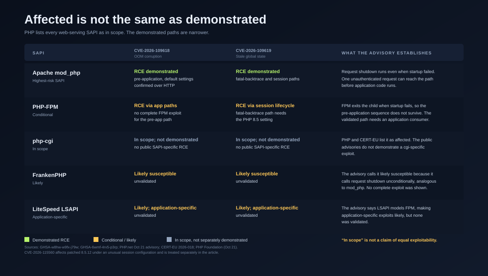
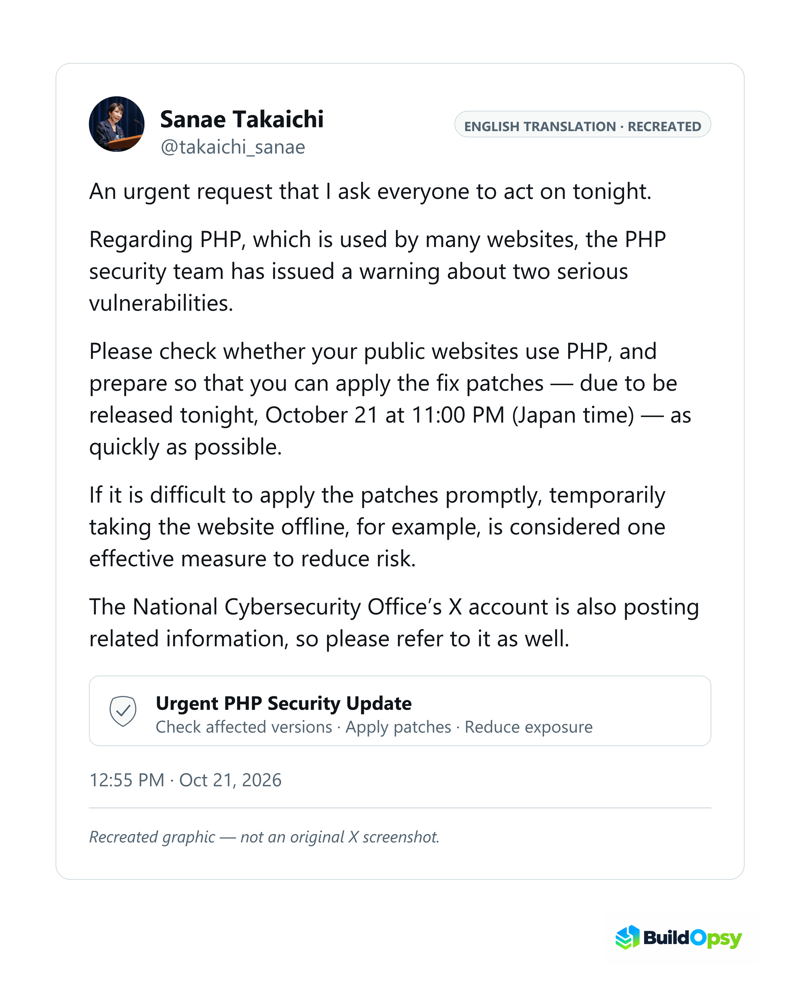

![Two-lane PHP2Shell timeline. The fix lane runs from a first sign found during the 2024 audit fix through Calif and OpenAI reporting on August 11, Wiz discovery on August 19, and release on October 21. The leak lane runs from an AWS honeypot attempt on October 17 through CVE identifiers leaking on October 20, a Calif proof-of-concept video, Cloudflare’s WAF, Chainguard’s early images at 07:41, and the 13:30 to 14:00 release. A shaded band marks the Calif-video-to-release interval of about eighteen hours, one of three warning intervals; the CVE identifiers gave about 22.5 to 23 hours and Chainguard’s images gave 6 hours 19 minutes.](../images/articles/php2shell-defender-window-timeline.svg)
1. Two bugs, one worker, and the SAPI that decides the risk
Both vulnerabilities sit in the part of PHP that almost every request touches: memory management and error handling. The first, CVE-2026-109618, is an out-of-memory corruption. PHP uses longjmp() to abort a request when it exceeds memory_limit. In some contexts, request memory is temporarily reachable before it is fully initialized. If an allocation fails at that moment, PHP leaves that memory in an invalid state; request shutdown can then read or branch on it as though it were valid. A multipart request without a usable content length, an unrestricted number of part headers, or nested field names can put enough pressure on the allocator to reach the condition.
The second, CVE-2026-109619, is a cross-request use-after-free. PHP keeps global state that points into memory owned by one request. A fatal error can abandon the operation before its matching reset, or a diagnostic can repopulate error state after cleanup has already cleared it. The worker survives with a global pointer into freed request memory. A later request handled by the same worker can consume that stale value before normal initialization replaces it. Exploitation needs a producer and a consumer: one request stores the unsafe state, and a later request acts on it.
That structure explains why the vulnerabilities are both severe and conditional. The CVSS vector is AV:N/AC:H/AT:P/PR:N/UI:N/VC:H/VI:H/VA:H/SC:N/SI:N/SA:N. The 9.2 score is real, and so are AC:H and AT:P: high attack complexity and attack requirements present. The bugs are not a single packet that works everywhere. The producer and consumer must reach the same worker. Multiple workers and worker recycling reduce reliability, but they do not remove the condition.
The demonstrations follow the same pattern. The PHP advisory calls the risk highest for Apache with mod_php, where an unauthenticated request can trigger the attack before any application code runs. The 109618 advisory says full RCE was validated over HTTP against mod_php with default input and memory limits and normal prefork configurations. For FPM, the advisory says source analysis supports susceptibility, but no complete FPM exploit was demonstrated for that SAPI on the application-independent path. The PHP Foundation adds that RCE was confirmed on FPM through application-level paths. For 109619, the fatal-backtrace path was confirmed against mod_php, and the session-lifecycle path was validated against both mod_php and FPM.
This is where most coverage flattens the story. PHP lists all PHP installations serving web requests as in scope: FPM, mod_php, php-cgi, FrankenPHP, and LiteSpeed. That is an affected statement. It is not a claim that every SAPI is equally exploitable. mod_php unconditionally invokes request shutdown even when request startup fails, which is why the pre-application path is strongest there. FPM exits the child when startup fails, so that exact sequence does not survive; the validated FPM path needs an application-level consumer. FrankenPHP is called “likely susceptible” by analogy to mod_php; LSAPI is called application-specific and likely, but unvalidated.

mod_php; FPM’s validated paths are narrower. Sources: the two GitHub advisories, the PHP advisory, and CERT-EU 2026-018. Swipe horizontally on narrow screens.mod_php but not PHP-FPM. Sansec said public exploits fail against default PHP. VulnCheck later built a commercial ASLR bypass, but it is not public. None of that makes the bug less severe; it describes how narrow the reliable path is.2. The bug was known in 2024. The fix took ten weeks.
The root cause was not discovered in August 2026. In 2024, PHP underwent its first external security audit in years, funded by the Sovereign Tech Agency through OSTIF and carried out by Quarkslab. While fixing an issue the audit reported, a PHP core developer found the first signs of the OOM problem behind CVE-2026-109618. A potential exploit was theorized that year, but no concrete vector was found, and other issues with clearer impact took priority.
Fixing it was hard for structural reasons, not for lack of attention. The PHP Foundation describes competing approaches that each carried a cost: backward-compatibility breaks, new denial-of-service potential, or coordinated changes across many third-party extensions. The security team operates by consensus. The engineers with the deepest knowledge of the engine were few and already busy. Work stalled and restarted over months. The Foundation’s own account calls the delay “a structural failure, caused by both the security team’s decision process and its lack of resources.” That sentence is the reason this is an audit rather than a CVE explainer.
The 2026 sequence is precise. Calif began auditing PHP on July 30 under OpenAI’s Patch the Planet program. On August 11, Calif researcher Ryan A reported an unconditional RCE with the same root cause, using GPT-5.6 Sol. OpenAI independently reported the same root cause. Wiz independently discovered the first vulnerability on August 19 using Wiz Atlas, Gemini 4 Argon, and GPT-5.6 Sol; it confirmed unauthenticated RCE against Drupal on August 20 and WordPress on August 21, and reported to PHP on August 24. OpenAI sent further attack vectors on September 18. Wiz records PHP acknowledging the reports and beginning coordinated fix work on September 21; the PHP Foundation says the OOM issue became the security team’s top priority from August 11. The patches shipped on October 21.
From Calif’s August 11 report to release is 71 days; from Wiz’s August 19 discovery, 63 days. If the clock starts at the 2024 audit finding, it is roughly two years. Those clocks measure a known flaw, a known exploit path, and a shipped fix. The useful version is narrower than “AI found a bug in August”: the flaw was known, the exploit path became practical with AI assistance, and remediation took ten weeks.
That is the first systems lesson. Discovery accelerated. Remediation and disclosure governance did not. The incident’s warning time was set less by how fast the bug was found than by how long it took to design a safe patch, win consensus for it, backport it across supported branches, and get distributors ready to ship it.
3. Five numbers called “exposure”
The most common sentence in coverage is that PHP powers about 70% of the web. That is a W3Techs crawl share of websites with a known server-side language, cited by Cloudflare, Wiz, and The Register. It is a prevalence figure, not a count of vulnerable hosts, exposed hosts, or compromises. Turning that crawl share into a vulnerability rate is a claim no source supports.
VirusTotal’s October 21 snapshot gives the best public ladder. It fingerprinted about 5.1 million IP addresses running PHP. About 3.8 million had at least one port open. Only about 1.1 million announced a version in an HTTP header such as X-Powered-By: PHP/8.3.35. Roughly four out of five PHP servers hide their version through expose_php = Off, stripped headers, or a reverse proxy.
The disclosing subset splits into about 272,000 on a supported branch from 8.2 to 8.5, about 758,000 on an end-of-life branch between 5.4 and 8.1, and about 88,000 on PHP 5.2 or 5.3. The three add to about 1.118 million. About 85,000 ran the exact releases published on September 24, the latest available before the fix. The arithmetic is worth showing because it closes: 272K + 758K + 88K = 1.118M, consistent with the ~1.1M that disclose a version. Of that disclosing subset, 758K ÷ 1.118M ≈ 67.8% were on end-of-life branches.
Those are host fingerprints, not confirmed vulnerable installations. A PHP host can be patched, can sit behind a proxy, can run a SAPI whose reliable exploit path is narrow, or can be one of several virtual hosts on a shared address. The banner is also a biased sample: the hosts that hide their version are exactly the ones an outside scan cannot classify by branch.
Qualys, in data reported by SecurityWeek, adds a different population, and it should not be mixed with the internet-host counts. In anonymized data from 12,000 customers, Qualys counted about 110 million instances on PHP 5.4 through 8.1 — about 71% of the population it measured — and another 44 million on supported branches for which fixes existed but had not been applied. It said 199,000 instances were patched within 12 hours of disclosure. The 110M + 44M = 154M total, and 110M ÷ 154M ≈ 71.4%, matches Qualys’s 71% end-of-life share. Do not divide 199K by 154M as a patch rate: the patched count is a 12-hour action count, while the 154M is a broader instance population. The point is scale and lag, not a precise percentage.
![Exposure ladder. About 70 percent of websites use PHP in a W3Techs crawl. VirusTotal fingerprints about 5.1 million PHP IPs, 3.8 million with an open port, and 1.1 million that disclose a version. Of those, 272 thousand are supported, 758 thousand are end-of-life 5.4 through 8.1, and 88 thousand are pre-5.4. A separate Qualys panel shows 154 million instances, 110 million end-of-life and 44 million supported but unpatched, with 199 thousand patched in 12 hours. The final rung is zero publicly confirmed compromises.](../images/articles/php2shell-exposure-ladder.svg)
The final rung is the one that matters for this audit: no publicly confirmed successful in-the-wild compromise as of 04:13 UTC on October 24, 2026. That is not a claim that none occurred. It is the state of the public evidence, and it is the number against which every other figure should be read.
4. The leak was the accelerant
The coordinated release was originally planned for October 22 at 14:00 UTC. On October 20, around 15:00 UTC, the two CVE identifiers began circulating on online forums and social media, accompanied by a wrong release time and a wrong CVSS score of 10.0. No technical details leaked at that point. PHP brought its pre-announcement forward to 19:30 UTC and moved the release to October 21 at 14:00 UTC.
Around 20:00 UTC, Calif mistakenly published a video showing its proof of concept against a number of targets and revealing a few additional, limited details. Copies circulated after the video was deleted. Mitigation advice that PHP had started giving to a few critical infrastructure providers around 23:00 UTC may also have leaked. PHP says it monitored the appearing PoCs and did not identify a functional exploit at the time of release.
Then came the part that the PHP Foundation treats as the decisive breach. At 07:41 UTC on October 21, Chainguard published built images containing the fix, more than six hours before the coordinated release. Chainguard, like other distributors, had received the patch in advance so its users could update when the vulnerabilities were disclosed. The Foundation’s account is that publishing the images let any attacker study the fix in binary form while every other PHP user was still waiting.
Chainguard’s account differs on characterization, not on the timeline. CEO Dan Lorenc told The Register that Chainguard “didn’t leak.” He said the company learned something was coming in PHP, independently found the same bugs with its own AI harness and a frontier model, helped test the patches, and shipped the fixes because exploitation reports were arriving. “It’s coordinated vulnerability disclosure, unless there’s evidence of active exploits in the wild,” he said. He would make the same call again. The Foundation says the early images disregarded weeks of coordination. Both positions belong in the record; the audit should not adjudicate motive.
The release time itself is a small but material discrepancy. CERT-EU’s advisory records the fixes at 13:30 UTC. PHP’s advisory and AWS use 14:00 UTC, the planned embargo lift. The difference is 30 minutes, but in a timeline built on hours it should be shown as a window, not silently rounded to one instant. Cloudflare’s WAF went live at 03:02 UTC, more than ten hours before the 14:00 embargo lift. Cloudflare describes the deployment as about nine hours ahead of public disclosure; the two statements do not reconcile exactly, so this audit uses the timestamp. Some of the “pre-disclosure” attack traffic was therefore already inside a window where a major edge provider was blocking known payloads.
The leak compressed the warning time in stages; there was no single defender window. The CVE identifiers circulating around 15:00 UTC on October 20 gave roughly 22.5 to 23 hours to the 13:30–14:00 UTC release, but they carried no technical detail. The Calif video around 20:00 UTC on October 20 gave roughly 18 hours and a working proof-of-concept demonstration. Chainguard’s images at 07:41 UTC on October 21 gave 6 hours 19 minutes to the 14:00 UTC release and exposed the fix in binary form. A defender who first learned from the identifiers had about a day but little to act on; one who first learned from the video had about 18 hours; one who first learned from Chainguard’s images had about six. The mechanism is not one universal countdown. It is the collision of different start times with the time each organization needed to test, backport, rebuild, and deploy.
5. Millions of attempts, no publicly confirmed compromise
Amazon Threat Intelligence recorded the earliest public exploitation attempt on October 17, four days before release, in its MadPot honeypot telemetry. The attempt came from an IP address associated with a commercial anonymization network. AWS’s CISO wrote that targeting a honeypot from an anonymized address suggests a threat actor, but that it remains unclear how the actor acquired exploit information before disclosure, and unclear whether any attempt would have succeeded in real-world systems. Between 02:00 and 08:00 UTC on October 21, AWS saw additional attempts from other anonymized infrastructure, with varied payloads and anonymization choices, suggesting multiple actors. That is an attempt against a sensor, not a victim.
F5 Labs separately recorded the first PHP2Shell scanning at 08:36 UTC on October 21, more than five hours before the 14:00 UTC release. That is a different observation from AWS’s October 17 honeypot attempt: AWS saw a single earlier attempt before the public leak; F5 saw the start of broader scanning after the leak and, by timestamp, after Chainguard’s 07:41 images. Neither observation establishes a successful compromise.
Cloudflare’s CEO, Matthew Prince, described the volume on Cloudflare’s network: thousands of attempts in the 10 hours before public announcement, tens of thousands within 45 minutes of the announcement, hundreds of thousands within two hours, and millions “now.” Those are attempt counts observed at one large edge provider, not unique attackers, unique targets, or successful compromises. The order-of-magnitude growth is the signal; the labels are approximate.
After disclosure, the activity became more sophisticated without producing a confirmed compromise, as SecurityWeek reported. Sophos tied attempts to Potassium, which it believes is a Mirai-derived botnet variant. It initially described successful exploitation, then corrected its assessment: customer telemetry showed scanning and failed attempts, and its countermeasures blocked the payload. Arctic Wolf linked two Potassium binaries to servers hosting PHP2Shell payloads but said its data did not show the PHP2Shell requests fetching or running the malware. Hunt.io attributed the traffic it saw to an established Mirai-style botnet active since at least May 2026, and reported 123 servers probed, roughly 57 running PHP, 10 rejecting the requests, and none successfully exploited. SOCRadar found an attacker-controlled server with a lab-tested “one-click” chain for PHP 8.4.26 on Apache mod_php; the operator fingerprinted about 20 websites, probed 11 in more depth, and none met the exploit’s requirements.
VulnCheck raised the technical ceiling. It built an exploit for CVE-2026-109618 that uses a memory leak to achieve code execution on x86-64 systems with ASLR enabled and PHP error display turned off, the recommended production configuration. By October 23, the exploit covered PHP 8.4.10–8.4.26 and 8.5.10–8.5.11 on both AMD64 and ARM64, adding ARM64 and a wider version range on mod_php. The exploit is available to VulnCheck’s Initial Access Intelligence customers, not as a public download. VulnCheck said it was not aware of another public or commercial exploit that achieves RCE on multiple PHP versions in production configurations, while expecting that to change. That is a meaningful escalation in capability, and it is still not a confirmed compromise.
The negative is consistent across independent observers. The Register reported on October 23 that there had been no publicly confirmed successful compromises. Dataminr described scanning, fingerprinting, and non-working exploits, with no known compromises. Wordfence said attacks were continuing without known compromises. NViso said the same as of October 23. Sansec revised its earlier mass-exploitation prediction, saying attackers need detailed knowledge of a server and particular conditions, and that public exploits fail against default PHP installations. Mandiant’s CTO said validated PoCs work against default mod_php but not PHP-FPM. As of 04:13 UTC on October 24, that remains the public record. It does not prove that no compromise occurred; it means no one has published one.
The evidence ledger scrolls horizontally on narrow screens.
| Claim | What the record shows | What it does not show |
|---|---|---|
| “Millions of attacks” | Cloudflare network attempt counts; AWS honeypot attempts; vendor telemetry. | Unique attackers, unique targets, or successful compromises. |
| “Mirai is exploiting it” | Sophos and Hunt.io attribute attempts to Mirai-style activity; Sophos corrected an earlier success claim. | A confirmed infection reached through PHP2Shell. |
| “Working RCE is public” | Wiz demonstrated RCE on WordPress, Drupal, and Joomla; Mandiant validated PoCs on default mod_php; VulnCheck built a commercial ASLR bypass. | A public exploit that works broadly against PHP-FPM or arbitrary production configurations. |
| “No compromise” | The Register, Dataminr, Wordfence, NViso, and the PHP Foundation report no publicly confirmed successful exploitation. | Proof that no compromise occurred; absence of public confirmation is not absence of compromise. |
There is also a status fact that is easy to misread. CISA had not added either CVE to its Known Exploited Vulnerabilities catalog as of the morning of October 23, according to SecurityWeek. This audit checked the catalog directly at 04:13 UTC on October 24: catalog version 2026.10.23, released October 23 at 19:30 UTC, does not include CVE-2026-109618, CVE-2026-109619, or CVE-2026-115560. KEV inclusion is a US federal remediation trigger, not a measure of severity or a verdict on exploitation. Its absence is not evidence that nothing happened.
6. Why going dark was rational
The shutdowns were independent decisions, not one coordinated command. Reuters documented Germany’s ITZBund taking several sites offline as a precaution with no incident known; France’s Interior Ministry taking prefecture sites offline; Belgium’s foreign ministry acting after attack reports while the national cyber centre recorded none; the Dutch NCSC, Port of Rotterdam, Overheid.nl, KNVB, five major parties, and hospitals going offline; Finland’s Valtori shutting government web services without identifying an attempt; the Czech government going offline at 17:00 GMT; Wikimedia taking down systems; the Internet Archive going offline for emergency maintenance; Orange SA suspending sites; Japan’s MoF, JMA, and National Tax Agency, along with Nomura, MUFG, ANA, and JR East, suspending services; the BBC and Edinburgh taking portals down; and Canada warning of disruption without evidence of compromise.
The UK government later said 32 of its services were unavailable and four partly unavailable, mostly because of precautionary measures taken while patches were applied. Japan’s prime minister, Sanae Takaichi, urged website owners to check whether their sites used PHP and to prepare to apply the new fix. BBC reported the check-PHP appeal. Her office took its own site offline after the disclosure and restored it by 4 p.m. on October 22, according to News On Japan; she later said the incident reinforced her view that temporarily shutting a website could be an important security measure, depending on the circumstances. This audit did not open the X post directly.

Listing countries is not an explanation. The systems logic is one explanation, and the public record supports it in some cases but not all. The record shows what organizations did and, in some cases, what they said about why; it does not contain a decision memo for every outage. The argument below is an analytical reconstruction of the incentive, not a claim that every operator reasoned in these terms. Operators were not choosing between “website online” and “website offline.” They were choosing between a known, bounded availability loss and an unknown compromise whose blast radius could extend beyond the PHP worker to the application, its data, and downstream systems. For mod_php, the demonstrated path can run before application code, so application-layer controls and application logs may not see it. A brand-new patch, a vendor saying no configuration is a complete mitigation, an end-of-life branch with no vendor fix, and a fix already circulating in binary form made “patch now” and “stay up” hard to hold together. In that framing, a bounded outage is visible, reversible, and over when the patch lands. A silent pre-application compromise is none of those things.
The cost was real and unevenly distributed. Hospitals, tax agencies, ports, rail operators, banks, and public broadcasters absorbed it. This audit does not invent a dollar figure for that loss. The Downtime Cost Calculator models availability cost from your own inputs; it does not model breach probability, expected loss from compromise, or the value of data that might have been exposed. It can frame the trade-off, not price this incident.
The rational choice is not automatically the optimal one. Some organizations may have taken down more than the evidence required; Sansec argued that stores did not need to go offline because public exploits fail against default PHP. Others may have patched faster than their change control allowed and taken avoidable risk. This audit cannot grade individual operators without their decision context. It can say the incentive was asymmetric: a bounded outage is visible and recoverable, while a silent compromise is neither.
7. What AI changed, and what it did not
Three claims need to stay separate. AI-assisted discovery is established. Calif used GPT-5.6 Sol; Wiz used Wiz Atlas, Gemini 4 Argon, and GPT-5.6 Sol; OpenAI independently reported the same root cause. AI-assisted exploit development is supported by evidence. Wiz says frontier models were critical to adapting the exploit across memory layouts and applications, and that a single researcher completed in a week work that would previously have taken a world-class team months. Chainguard’s CEO says he independently found the same bugs over a weekend with a basic prompt. Attacker use of AI is not established. AWS’s October 17 honeypot hit predates the first public leak by three days, and AWS says it is unclear how the actor acquired exploit information. No public source reviewed here attributes the hit to AI.
OpenAI’s “Defender’s Window” claim is narrower than it sounds. OpenAI says that, to its knowledge, frontier AI found the vulnerabilities before attackers did. That is a claim about discovery order, not about the absence of exploitation. The window existed from August to October. It was consumed by ten weeks of fix engineering, a consensus process, and a leak. The lesson is not that defenders won the race; it is that the race’s bottleneck moved to remediation and disclosure.
Sophos says attackers are also struggling: building a working exploit is difficult even with AI help. VulnCheck’s ASLR bypass is commercial, not public, and the public PoC flood is mostly non-functional. AI lowered the marginal cost of exploit development, but it did not make every attacker capable or remove the configuration requirements. The conclusion is not “AI broke security.” It is that AI changed the economics of exploit development faster than the institutions around the fix changed their ability to ship, disclose, and coordinate.
8. The patch was not the end
On October 23, PHP published an informational advisory for a third vulnerability, CVE-2026-115560. It affects even patched PHP 8.5.12 under an unusual configuration: an application sets session.serialize_handler to php_binary or php_serialize, then switches it to php at runtime with ini_set() before calling session_start(), with session upload progress enabled. PHP calls the setup unlikely in practical use and will fix it in the next regular release, not an out-of-band one. The mitigation is to set session.upload_progress.enabled=0 and restart every worker. The point is not that the emergency patch failed. It is that “patched” is a version state, not an incident state.
The long tail is the part that does not end with the news cycle. VirusTotal counted about 758,000 disclosing hosts on end-of-life PHP 5.4 through 8.1, and Qualys counted about 110 million instances on those branches across its customer base. Some distributions and LTS vendors backported the fix; some did not. CERT-EU noted that rpms.remirepo.net would not have updates on release day, and urged users to switch to distribution packages or build from source. PHP 8.2 reaches end of life on December 31, 2026. An organization that cannot move off 5.4 through 8.1 is not a laggard; it is the population this incident will keep exposing.
Proving a negative is harder than patching. For mod_php, the pre-application path can leave little in application logs. AWS recommends looking for POST requests containing PHP_SESSION_UPLOAD_PROGRESS, unexpected process execution, and file modification. Wiz adds unusual multipart requests followed by memory-limit errors or repeated HTTP 500 responses. Those are leads, not proof. The 109619 advisory warns that absence of an error in logs is not proof of safety, and that historical logs may have been collected with deprecations or other relevant severities excluded. An organization that patched on October 21 still cannot easily prove it was not compromised on October 17.
9. The verdict, and the guardrails that map to the failures
The public record supports a global availability incident, a disclosure failure, millions of exploitation attempts, a commercial ASLR bypass, and Mirai-linked tooling. It does not support turning the 70% crawl share into a vulnerability rate, “millions of sites were hacked,” “AI caused the attack,” or “Chainguard caused the attacks.” The narrower conclusion is more useful: discovery speed was no longer the binding constraint; remediation governance and disclosure discipline determined how much warning defenders had.
The guardrails should map to specific failures, not to a generic security checklist.
Inventory by SAPI and branch, not by version banner. About four in five PHP hosts hide their version. A scan that reads X-Powered-By sees a biased subset. The organizations that knew their mod_php exposure, their FPM pools, their end-of-life branches, and their container base images had a better decision than the ones that knew only “we use PHP.”
Set hours-not-days patch SLAs for internet-facing RCE. AWS’s own lesson from this event is that a 7-day or 30-day SLA assumes a delay that no longer exists. The 71-day fix is the maintainers’ clock. For the public exploit population, the warning clock compressed at the leak; the October 17 honeypot hit shows that the earliest activity may predate it. Those are different deadlines, and defenders need the second one.
Pre-agree leak escalation. The PHP process had a plan for coordinated disclosure. It did not have a plan that survived CVE identifiers on social media, a researcher’s accidental video, and a distributor publishing images early. Decide in advance what changes when the identifier, the PoC, or the binary fix appears before the agreed date. “We will assess it” is not a plan.
Rehearse patch-or-isolate with a named decision owner. Many shutdowns appear consistent with that bounded-outage calculation, but the public record does not show that every organization reasoned that way; the response was improvised across many organizations. A pre-approved threshold for taking a service offline, a named owner, and a tested restore path turn a chaotic availability decision into an operational one.
Assume pre-disclosure exploitation. Investigate from the earliest known attempt, not from the advisory date. AWS’s October 17 honeypot hit is the concrete reason. For mod_php, monitor the pre-application path, not just application errors.
Treat end-of-life as a board-level risk. The 758,000 disclosing hosts on 5.4 through 8.1, and Qualys’s 110 million end-of-life instances, are the part of the incident that cannot be fixed by a release-day patch. Either fund the migration or fund the compensating controls, but do not describe the EOL estate as “covered” because a WAF is in front of it.
Fund the maintainers. The PHP Foundation’s account says the fix stalled for lack of deep engine expertise and consensus capacity, and that the security team has since changed its process. That is a procurement and sponsorship decision, not a developer-productivity slogan. The next PHP2Shell will be judged less by how fast someone finds it than by how fast the fix reaches the hosts that cannot easily be patched, and by whether the disclosure process survives its first leak.
The fix was ready. The warning was late, the deployment was uneven, and the cost of being wrong was asymmetric.
Sources and Method
Research cutoff: 04:13 UTC on October 24, 2026. This audit inspected the PHP advisory and the October 23 informational advisory, both GitHub security advisories, the PHP Foundation’s disclosure post, OpenAI’s Patch the Planet post, AWS’s MadPot post, Cloudflare’s WAF post, CERT-EU advisory 2026-018 v1.2, Wiz’s technical writeup, VirusTotal’s exposure analysis, the Reuters factbox, The Register’s follow-ups, BleepingComputer’s AWS report, SecurityWeek’s October 23 report, and the linked vendor research. The CISA KEV catalog was checked directly at the cutoff: version 2026.10.23, released October 23 at 19:30 UTC, did not include CVE-2026-109618, CVE-2026-109619, or CVE-2026-115560.
Source-access notes: F5 Labs describes both flaws as CVSS 9.8 in its October 22 post. PHP and CERT-EU publish 9.2 under CVSS 4.0. NVD carries the PHP 9.2 CNA score as a secondary CVSS 4.0 entry and also publishes its own CVSS 3.1 primary score of 8.1. This audit uses the PHP/CERT-EU 9.2 CVSS 4.0 score. F5’s 08:36 UTC scanning observation is used for the timeline, not for severity. Qualys figures are as reported by SecurityWeek; the Qualys blog returned HTTP 403 to this audit. Sophos’s site timed out to automated checks; its claims are attributed through SecurityWeek. OpenAI and BleepingComputer block automated HTTP clients but were fetched directly. Wordfence returned HTTP 202 (a challenge response) to automated checks; its claim is corroborated by SecurityWeek. The no-compromise status was rechecked through the new cutoff.
The release time is shown as a 13:30–14:00 UTC window because CERT-EU records 13:30 and PHP and AWS use 14:00. The timeline in Figure 1 is ordinal, not to scale. VirusTotal counts are host fingerprints, not confirmed vulnerable installations; the version-disclosing subset is biased toward hosts that expose banners. Qualys counts instances across 12,000 customers, not internet-facing hosts; 110M + 44M = 154M and 110M ÷ 154M ≈ 71.4%, matching Qualys’s 71% end-of-life share, but the 199,000 patched-in-12-hours figure is not a percentage of that total. No dollar loss, breach count, or compromise total is inferred. The Takaichi and Prince posts were not opened directly; their wording is taken from Reuters via the Straits Times, BBC, News On Japan, and Euronext reporting. The article does not include exploit payloads or operational attack instructions.
- PHP: critical RCE advisory and mitigations, October 21, 2026
- PHP: informational advisory for CVE-2026-115560, October 23, 2026
- GHSA-w8hw-w9fx-j79w: RCE via OOM corruption (CVE-2026-109618)
- GHSA-6wmf-4rv5-p3rp: RCE via stale global state (CVE-2026-109619)
- PHP Foundation: release, 2024 audit history, and leak chronology, October 21, 2026
- OpenAI: Patch the Planet and the Defender’s Window, October 21, 2026
- Wiz Research: PHP2Shell technical writeup and disclosure timeline, October 21, 2026
- AWS: MadPot pre-disclosure exploitation and IOCs, October 21, 2026
- F5 Labs: first PHP2Shell scanning at 08:36 UTC, October 22, 2026
- Cloudflare: WAF deployment and full-transaction detection, October 21, 2026
- CERT-EU: Security Advisory 2026-018, v1.2, October 23, 2026
- VirusTotal: sizing the PHP exposure window, October 21, 2026
- Reuters factbox: governments and companies taking sites offline, October 22, 2026
- The Register: third PHP2Shell bug and the no-confirmed-compromise record, October 23, 2026
- The Register: PHP Foundation and Chainguard accounts of the early images, October 22, 2026
- SecurityWeek: Mirai-linked attempts, ASLR bypass, Qualys patching data, October 23, 2026
- BleepingComputer: AWS pre-disclosure exploitation and Dataminr’s no-known-compromise assessment, October 22, 2026
- BBC: Takaichi’s check-PHP appeal and the wider offline warning, October 21, 2026
- Straits Times/Reuters: Takaichi’s check-and-prepare appeal and Prince’s attempt sequence, October 22, 2026
- News On Japan: Takaichi’s office site offline and restored, October 23, 2026
- Arctic Wolf: Potassium binaries and PHP2Shell payload servers
- Hunt.io: Mirai-style botnet attribution and the 123-server probe
- Reuters via Euronext: Prince’s attempt-volume sequence, October 22, 2026
- NViso: operational guidance and status, October 23, 2026
- VulnCheck: ASLR-bypass exploit for CVE-2026-109618
- SOCRadar: attacker server and PHP2Shell tooling
- Wordfence: continuing attacks, no known compromises
- Sansec: PHP2Shell research and the default-configuration caveat
- CISA: Known Exploited Vulnerabilities catalog, checked October 24, 2026
- UK NCSC: critical PHP security issue guidance
- NCSC-NL: operational information and affected-software list
- Censys: PHP2Shell patching dashboard
Figures 1–3 are Buildopsy originals. Figure 1 is an ordinal timeline, not a to-scale reconstruction. Figure 2 separates affected scope from demonstrated exploit and demonstrated RCE. Figure 3 uses different populations deliberately and does not convert any of them into a compromise count. Figure 4 is a recreation of the Prime Minister’s post, labeled in the image as an English translation and recreation; it is not an original X screenshot, and the exact wording was not verified against the live post.